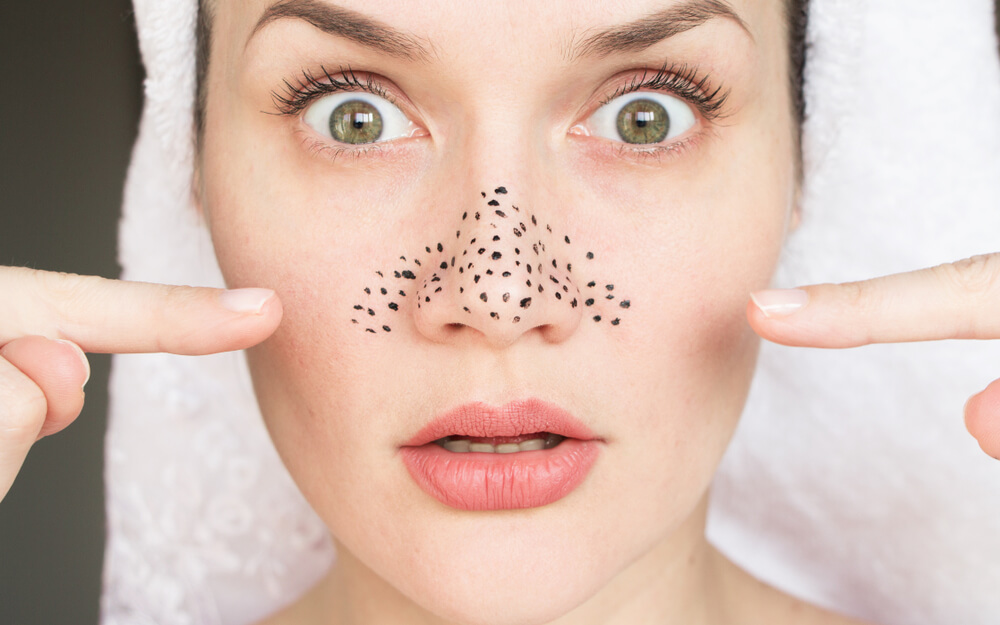

¿QUE PUEDE PRODUCIRTE PUNTOS NEGROS?
No desmaquillarte
Hay miles de razones por las cuales siempre tienes que desmaquillarte antes de dormir, pero una de las mayores razones es que pueden provocar brotes y espinillas, además de puntos negros.

Tocar tu cara constantemente
Es posible que tengas la mala costumbre de hacer esto y ni siquiera te des cuenta. Piensa en la forma en que descansas la barbilla en tus manos, o agarra tus mejillas cuando estás avergonzada.
Si estás obsesionado con tocar tu cara, eso es más un problema. Todo el contacto extiende las bacterias de los dedos a la cara, lo que puede provocar puntos negros.
Obsesionarte con exprimirlos
Sabemos lo tentador que es exprimir los puntos negros, pero no eres una cosmetóloga profesional y tocar constantemente tu cara puede ocasionar más problemas.
El problema es que, al no ser profesionales, usamos el método equivocado. Mucha gente tiende a enloquecer con las herramientas para remover puntos negros y eso puede causar problemas, como irritación y daños en los poros.
No limpiar tu teléfono y accesorios
Piensa en todo lo que entra en contacto con tu cara. Brochas de maquillaje, teléfonos, manos, auriculares, diademas. ¿Cuándo fue la última vez que desinfectaste alguno de esos? ¡Exacto!
Bueno, esas cosas son básicamente portadoras de bacterias. Cuando se frotan contra su piel, las bacterias pueden transferirse. ¿Y sabes lo que eso significa? Puntos negros.